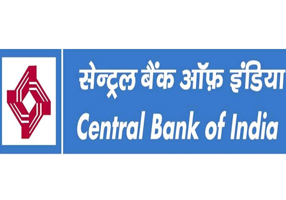

Bank Peon Post Recruitment ! 8th, 10th Pass
! Apply Online For 484 Posts

Central Bank of India now hired a latest job vacancy of Safari Karmachari and Sub Staff Posts apply
through online application mode. Let's check out the procedure of application about allover central Bank
Recruitment, which is mentioned below.
Here you get about all the required criterias which is generally required for this job, Criterias such
as Educational qualification,Age limit,Salary,Important notes, Important date,Important documents,
Selection process , how to apply online? etc.
Central Bank Peon Post Recruitment
Eligibility criteria
Educational qualification
Must Know regional language.
As per Central Bank of India official notification candidates must have passed 8th or 10th class from a
recognised Board.
Age Criteria
As per recruitment notifications candidates age limit is on 31 March 2023
- Minimum Age - 18 Years
- Maximum Age - 26 Years
- Age Relaxation - As per government Rules.
- For OBC Students - 03 Years
- For ST/SC/Pwd - 05 Years
- For Ex-Service man - 05 years
- For PWD+SC/ST- 15 Years
- For more Information please visit its official website.
Salary Information
14,500/- to 28,145/-PM
Selection Process
Candidates selected by the process of
- Online Examination
- Local Language Test
Online Exam Pattern
- English Language Knowledge - 10
- General Awareness - 20
- Elementary Arithmetic - 20
- Pshycomatric Test (Reasoning) - 20
Total 70 and Time Duration 90 minutes
Which state you are applied for according to that country you must know Local Language and Local Language
Test 30 Marks Time Duration 30 minutes.
Application Fees
- For General Candidates: 850/-
- For EWS Candidates: 850/-
- For OBC Candidates: 850/-
- For PhD Candidates: 175/-
- For SC/ST/Female Candidates: 175/-
- Payment mode: Online.
For more information, please visit its official website.
Bank Peon Post Recruitment 2024 important documents
- Qualification certificate (above mentioned certificate)
- Certificate indicating the date of birth (SSLC/HSC)
- Recent color passport size photo
-
If any experience certificate:
Odisha Bank Peon Post Recruitment important dates
Apply Start Date - 20 December 2023
Apply Last Date - 09 January 2024
Exam Date - Jan/Feb 2024
Admit Card - Update Soon
Bank Peon Post Recruitment important notes:
If you are false/ incomplete application form then it is not accepted by the authority. So beware at the time of fullfill the form in online. After last date submit the form otherwise it will be rejected.
How to apply Bank Peon Post Recruitment ?
- Firstly, you visit Google and search the official website.
- Then, read all the required notifications carefully.
- Next, fill out the form and provide the required document details.
- It is not free of charge to apply online, so you have to pay for the online application.
- Upload your passport size photo and signature.
- After completing the registration, take a printout for confirmation.
- Click on the submit button.
- Now, wait for the date of your Interview & Document Verification.
IMPORTANT LINKS